- Features
- Travel and Exploration - the UK Medical Heritage Library Collection
Travel and Exploration - the UK Medical Heritage Library Collection
The UK Medical Heritage Library collection holds a large number of texts on travel, exploration, and world culture. Here we've selected some for your pleasure....
India to Australasia
Here we have three publications exploring the Indisan subcontinent, the Malay Archipelago and New South Wales...
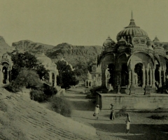
The Western Rajputana States : a medico-topographical and general account of Marwar, Sirohi, Jaisalmir
Published: 1899
UKMHL
View text
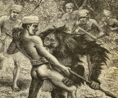
The Malay archipelago
Published: 1877
UKMHL
View text
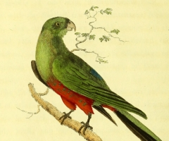
Journal of a voyage to New South Wales : with sixty-five plates of non descript animals, birds, lizards, serpents, curious cones of trees and other natural productions
Published: 1790
UKMHL
View text
Europe - from Scotland to the Alps....
Here we have publications about travel all over Western and Central Europe, from Scotland to Italy, the French Riviera, the Eastern Alps and Madeira....
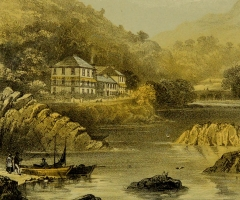
Remarks on the advantages of Glengarriff as a winter health resort and sanatorium.
Published: 1877
UKMHL
View text
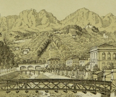
Wintering in the Riviera : with notes of travel in Italy and France, and practical hints to travellers
Published: 1879
UKMHL
View text
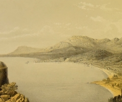
Mentone, the Riviera, Corsica and Biarritz as winter climates
Published: 1862
UKMHL
View text
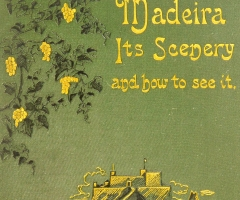
Madeira, its scenery and how to see it
Published: 1882
UKMHL
View text
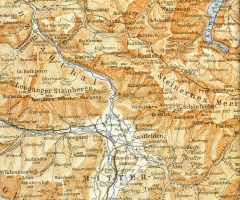
The eastern Alps including the Bavarian highlands, Tyrol, Salzkammergut, Styria, Carinthia, Carniola, and Istria
Published: 1888
UKMHL
View text
Travels in North and East Africa
Tripoli, Algiers and Abyssinia beckon for the adventurous reader....
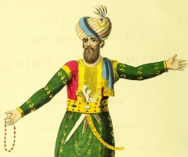
Narrative of a ten years' residence at Tripoli in Africa : from the original correspondence in the possession of the family of the late Richard Tully, Esq. the British consul...
Published: 1816
UKMHL
View text
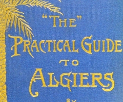
'The' practical guide to Algiers.
Published: 1890
UKMHL
View text
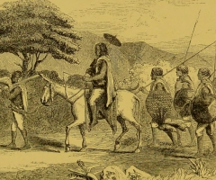
Life in Abyssinia (Volume 2)
Published: 1853
UKMHL
View text
Central Africa
The African continent explored, with publications spanning 1799 to 1890....
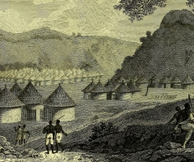
Travels in the interior districts of Africa: performed under the direction and patronage of the African Association, in the years 1795, 1796 and 1797
Published: 1799
UKMHL
View text
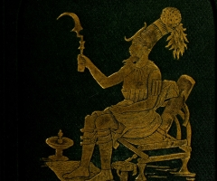
The heart of Africa : three years' travels and adventures in the unexplored regions of Central Africa from 1868 to 1871 (Volume 1)
Published: 1873
UKMHL
View text
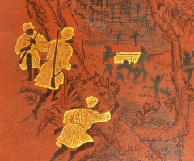
In darkest Africa, or, The quest, rescue, and retreat of Emin, governor of Equatoria
Published: 1890
UKMHL
View text
Central and Eastern Europe
From Hungary to the Bosphorus, the Ionian Isles to Macedonia....
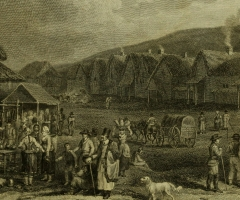
Travels from Vienna through lower Hungary : with some remarks on the state of Vienna during the Congress, in the year 1814
Published: 1818
UKMHL
View text
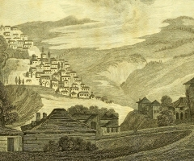
Travels in the Ionian Isles, Albania, Thessaly, Macedonia, &c. : during the years 1812 and 1813
Published: 1815
UKMHL
View text
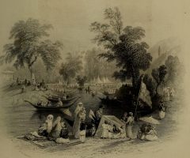
The beauties of the Bosphorus
Published: 1838
UKMHL
View text
The world is your oyster
Finally, a selection of our favourites from the collection....Siberia, South America, Europe and Africa again....
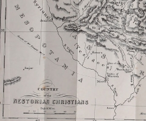
The Nestorians; or, the Lost Tribes: containing evidence of their identity; an account of their manners, customs, and ceremonies; together with sketches of travel in ancient Assyria, Armenia, Media, and Mesopotamia, etc
Published: 1843
UKMHL
View text
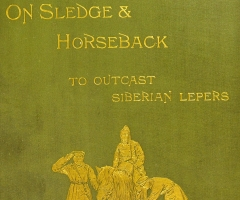
On sledge and horseback to the outcast Siberian lepers
Published: 1892
UKMHL
View text
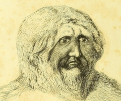
Wanderings in South America, the north-west of the United States and the Antilles...
Published: 1825
UKMHL
View text
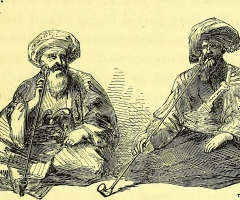
Travels of Lady Hester Stanhope, forming the completion of her memoirs, narrated by her physician. (Volume 0002)
Published: 1846
UKMHL
View text
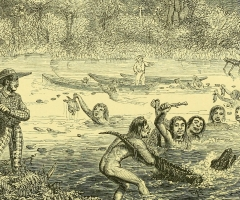
A naturalist on the River Amazons...
Published: 1863
UKMHL
View text
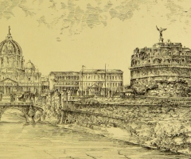
Continental travel : with an appendix on the influence of climate, the remedial advantages of travelling...
Published: 1896
UKMHL
View text
Search tips
You can make use of the Pages tab in the Viewer to search within the publication you're viewing.
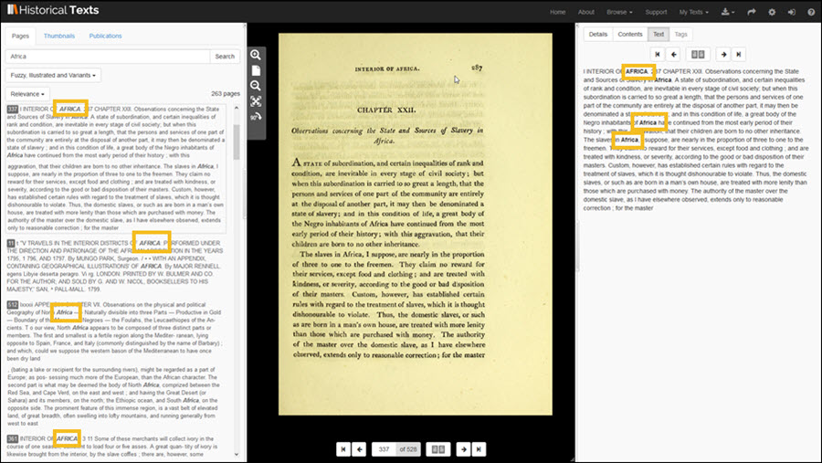